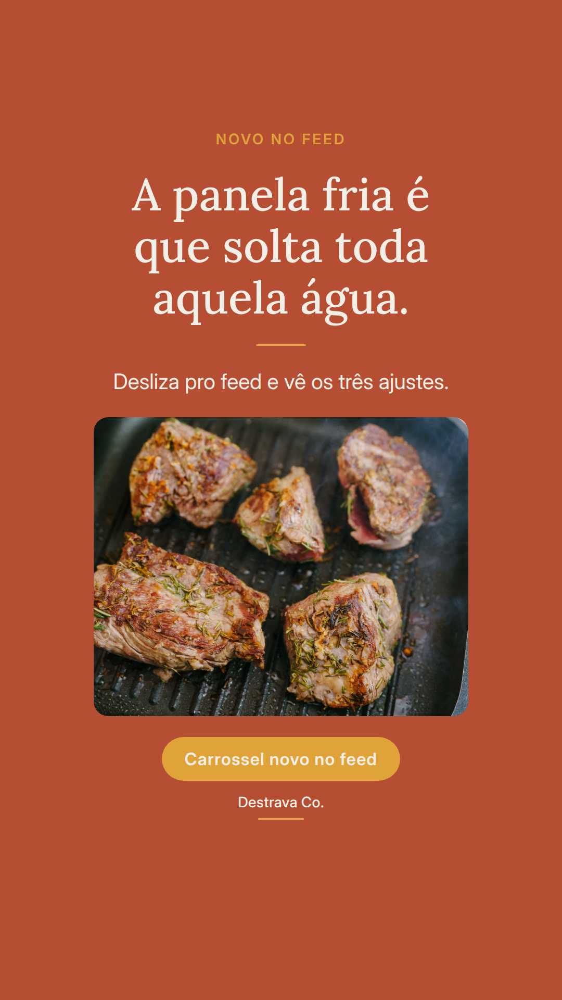
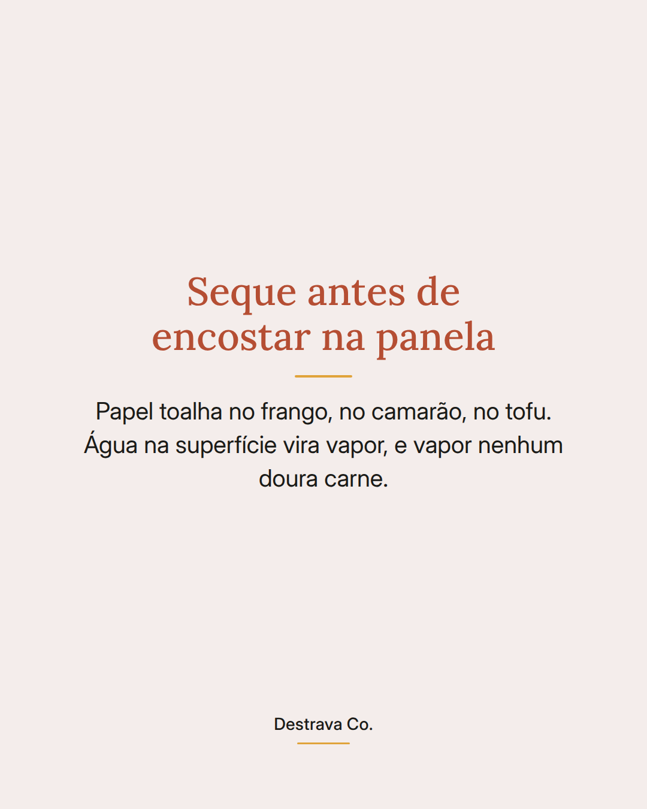
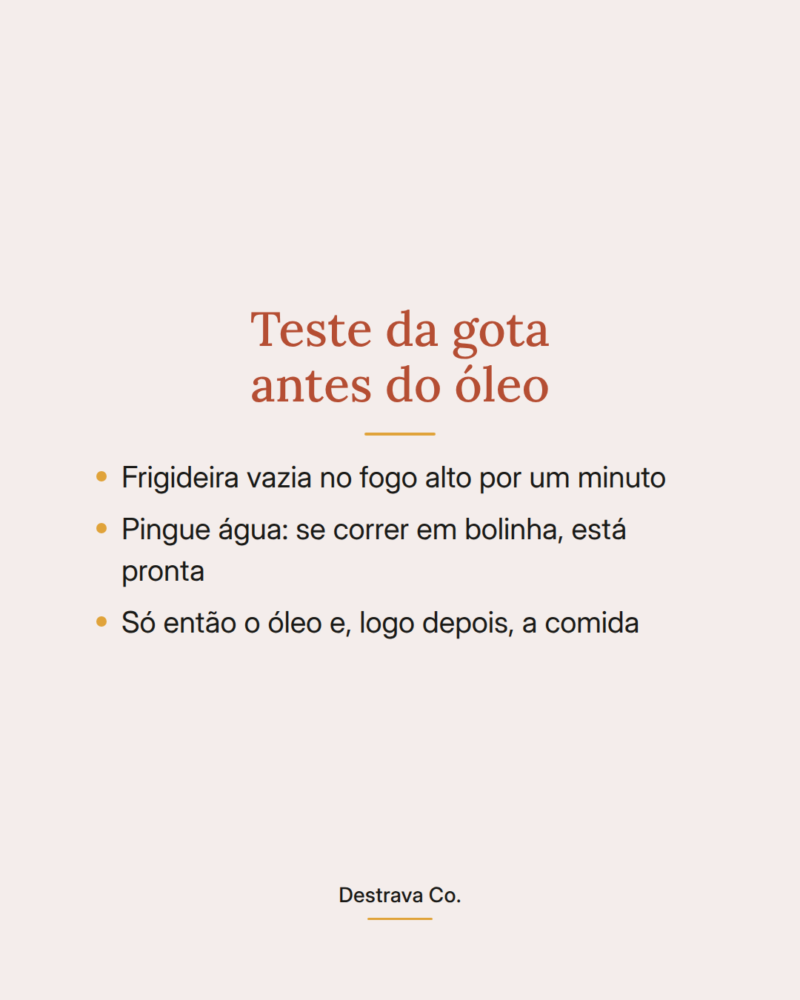
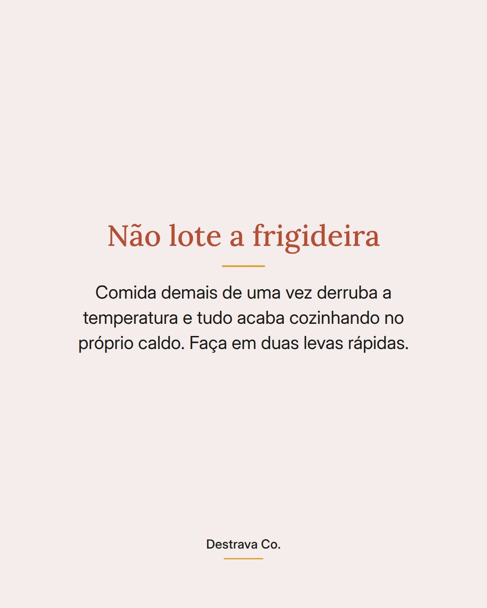

O frango soltou água e cozinhou no próprio caldo porque a panela ainda estava fria.
Técnica de frigideira muda o jantar mais do que receita nova: seca, quente e sem lotar.
Seque o ingrediente com papel toalha antes de encostar na panela. A água da superfície vira vapor, e vapor não doura nada.
Espere a frigideira vazia esquentar por cerca de um minuto. Pingue uma gota de água: se ela correr em bolinha, é a hora do óleo e, em seguida, da comida.
E resista a jogar tudo de uma vez. Em duas levas rápidas sai dourado; tudo junto sai cozido e pálido.
Salva pra lembrar na próxima vez que acender o fogo e manda pra quem vive brigando com a frigideira. Se quiser ideias prontas, o PDF com 20 receitas rápidas até 15 min está te esperando.